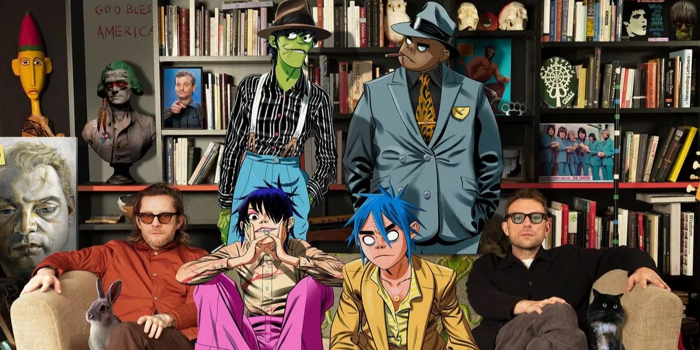

Kid Kapichi
Het is Kapee-chee. Het zijn Jack Wilson (gitaren, zang), Ben Beetham (zang, gitaren), Eddie Lewis (bas) en George Macdonald (drums). Vier twintigers met grote persoonlijkheden uit Hastings die al meer dan de helft van hun leven samen muziek maken, in verschillende configuraties. Werken in pubs, de bouw, motorhandel, van alles. Ze draaien nachtdiensten om te kunnen blijven spelen.
De vier hebben iets speciaals bedacht als Kid Kapichi. Een reus van een band op en naast het podium dankzij de Hastingscene die hen koesterde, totdat ze hun grote doorbraak kregen van Frank Carter - hij nodigde hen uit om op zijn verjaardagsfeestje te spelen en daarna met hem mee te gaan op een grote tournee. Hun beste songs verkennen racisme, armoede onder werkenden, geestelijke gezondheid, geweld, frustratie en alles verterende liefde met eerlijkheid en humor. Al hun liedjes zijn bezaaid met haken van prikkeldraad, bruisend van de schokkende schok van doorleefde ervaring, de cathartische sensatie van een gebalde vuist die zich ontspant in een luchtstoot.
Na het uitbrengen van hun zelfgeproduceerde debuutalbum This Time Next Year tijdens de lockdown in 2021, tekende de band onlangs hun eerste echte deal voor de opvolger Here's What You Could Have Won. Een verdiende beloning voor al dat werk. Deze 11 nieuwe nummers zijn een uitstekende showcase voor het grotere, punkere, 'beat punk' geluid van de band, mede geproduceerd met Dom Craik van Nothing But Thieves.
Comeback single New England in January 2022 is hun meest expliciete politieke nummer tot nu toe, met een schrijnend gastvers van Bob Vylan. Het is een brute ontleding van de xenofobe Little England-mentaliteit. Ze volgden met Partygate polemiek Party At No. 10, geprezen door Liam Gallagher op Twitter, die ze probeerden te debuteren met een busking optreden buiten de meest beruchte rave venue van het land - voordat ze werden afgeschrikt door de gewapende politie van Downing Street. Dat zal Kid Kapichi echter niet lang tegenhouden, want ze toeren met het nieuwe album door het Verenigd Koninkrijk en Europa tot ver in volgend jaar. Doe mee.
Bron: https://www.kidkapichi.com/pages/about
Måneskin
Måneskin werd in 2016 opgericht in Rome door zanger Damiano David, bassist Victoria De Angelis en gitarist Thomas Raggi. Zij kenden elkaar al van de middelbare school. Drummer Ethan Torchio leerden ze kennen via een Facebook-advertentie. De naam van de band, het Deense woord voor "maneschijn", werd voorgesteld door bassist Victoria. Zij kwam hierop omdat haar moeder Deens is.
In 2017 raakte de groep bekend in eigen land door als tweede te eindigen in het elfde seizoen van de Italiaanse versie van X Factor.
Met het nummer Zitti e buoni werd de band in maart 2021 eindwinnaar van het Festival van San Remo, Italiës meest prestigieuze muziekconcours dat tevens dienst deed als preselectie voor het Eurovisiesongfestival. In mei van dat jaar vertegenwoordigden zij vervolgens Italië op het Eurovisiesongfestival 2021 in Rotterdam, waar zij hetzelfde nummer ten gehore brachten. De band eindigde bij de puntentelling van de vakjury's als vierde, maar zegevierde alsnog dankzij een afgetekende overwinning bij het televotende publiek. Het was pas de derde keer en voor het eerst sinds 1990 dat Italië het Eurovisiesongfestival won.
Tijdens de persconferentie na de overwinning werd de band gevraagd naar de beelden tijdens de finale van zanger Damiano die cocaïne leek te snuiven. Hij verklaarde dat hij niet aan drugs doet en dat hij naar een gebroken glas op de vloer keek. Een vrijwillig afgelegde drugtest was negatief.
In 2021 zette het succes van de groep verder. De cover Beggin' uit hun X factor-periode werd een wereldwijde hit, tot zelfs in de Amerikaanse Billboard Hot 100. Het nummer stond wekenlang in de top 10 van de mondiale Spotify-hitlijst. Ook de singles I Wanna Be Your Slave en Mammamia geraakten in de hitlijsten. Van juni tot augustus waren ze op een Europese promotietour. In België traden ze tijdens het Ronquières Festival op voor 5.000 bezoekers.
Bij de MTV European Music Awards 2021 werden ze uitgeroepen tot beste rockband.
Bron: https://nl.wikipedia.org/wiki/M%C3%A5neskin.nl

Gorillaz
Gorillaz, een virtuele band, werd in 1998 gecreëerd door Damon Albarn van Blur en striptekenaar Jamie Hewlett. De band bestaat uit vier geanimeerde leden: 2D op leadzang en keyboard, Murdoc Niccals op bas, Noodle op gitaar en Russel Hobbs op drums en percussie.
In 2000 brachten ze een mini-album "Tomorrow Comes Today" uit, een jaar later gevolgd door het volledige album "Gorillaz". Een van de meest succesvolle nummers waardoor ze de Amerikaanse hitlijsten binnenvielen was hun debuutsingle "Clint Eastwood". Het nummer hielp hen ook om twee nominaties te scoren voor Beste Britse single en Beste Britse video bij de BRIT Awards van 2002.
In die tijd ging het gerucht dat ze aan een filmproject zouden werken, maar dat werd later opgegeven omdat er geen script was dat goed genoeg was voor de groep. "We verloren alle interesse om het te doen zodra we begonnen te vergaderen met studio's en te praten met deze Hollywood uitvoerende types, we zaten gewoon niet op een lijn," zei de producer eerder. "We zeiden, 'f**k it, we blijven zitten met het idee totdat we het zelf kunnen doen, en misschien ook zelf het geld bij elkaar kunnen krijgen.' "
Na een tijdje uit de schijnwerpers te zijn geweest, kwam Gorillaz in 2005 terug met een nieuw studioalbum "Demon Days". Met dit album behaalden ze hun eerste nummer 1 album in Groot-Brittannië en bereikten ze de top 10 van de Billboard 200 met een piek op nummer 6 in de hitlijst. Aan het eind van het jaar was het album vijf keer platina in de U.K., dubbel platina in de U.S. en driedubbel platina Down Under.
Na hun wereldwijde succes plande de band een holografische 3-D wereldtournee die gepland stond voor 2007 en 2008. Ze gaven een voorproefje van het optreden tijdens optredens op de 2005 MTV Europe Music Awards en de 2006 Grammy Awards met de aanwezigheid van de virtuele Madonna tijdens de laatste show.
Maar de reis werd later geschrapt vanwege logistieke problemen. "Het was extreem duur, extreem moeilijk, er kunnen miljoenen dingen misgaan, elke seconde dat het ding speelt. We deden dat ding tijdens de EMA's. Dat was een voorproefje van hoe het zou kunnen zijn," zei Hawlett tijdens een interview.
In plaats van op pad te gaan, was Gorillaz druk bezig met het maken van een documentaire. Na bijna twee jaar werd de film "Bananaz" eindelijk uitgebracht in 2009. De film, geregisseerd door Ceri Levy, ging over de capriolen van de "echte muzikanten" achter de virtuele band in de loop van zeven jaar. De film werd in 2008 selectief vertoond op filmfestivals.
Een jaar na het debuut van "Bananaz" bracht de band op 9 maart 2010 het nieuwe album "Plastic Beach" uit. Op dit album spelen onder andere Snoop Dogg, Bobby Womack, Mos Def, Lou Reed en Mike Jones. De leadsingle van het album "Stylo" was al maanden voor de albumrelease uitgebracht en bereikte nummer 25 in de Billboard Alternative Songs chart.
Hun vierde studioalbum "The Fall" werd uitgebracht in december 2010. Na een pauze van bijna zeven jaar kondigde de band op 23 maart 2017 via Instagram hun vijfde studioalbum "Humanz" aan. De track werd vervolgens uitgebracht op 28 april 201. Het aankomende project telt in totaal 20 nummers en bevat een aantal samenwerkingsnummers met onder andere D.R.A.M., Grace Jones, Danny Brown en Pusha T.
Bron: https://www.aceshowbiz.com/celebrity/gorillaz/biography.html
Arctic Monkeys
De indierockband Arctic Monkeys heeft al vroeg in hun carrière een reeks successen geboekt. Hun twee singles 'I Bet You Look Good On The Dancefloor' en 'When The Sun Goes Down' stegen al snel naar de toppositie van de UK singles chart. Als gevolg daarvan werden er van hun eerste album 'Whatever People Say I Am, That's What I Am Not' meteen 120.000 exemplaren verkocht in de eerste week na de release in het VK op 23 januari 2006, wat de weg vrijmaakte voor een release in de V.S. op 21 februari 2006. Het album werd later uitgeroepen tot Best Album bij de NME Awards 2007. Na de wereldwijde verspreiding van hun album was de geplande wereldtournee alleen al in de VS uitverkocht, waardoor ze het voorgerecht mochten serveren in 'Saturday Night Life' op 11 maart 2006 en hun muziekoptredens mochten voortzetten tot 8 juli 2006 in Kildare, Ierland.
De Britse band stal bovendien de schijnwerpers op de ShockWaves NME Awards van 2006 en won 3 van de 4 nominaties, voornamelijk voor Best New Band, Best British Band en Best Track awards voor 'I Bet You Look Good On The Dancefloor'. Bovendien was hun track 'When The Sun Goes Down' op de een of andere manier zo inspirerend geworden voor de Britse producer Paul Fraser die later twee korte films produceerde op de DVD getiteld 'Scummy Man' die ook de muzikale promo van 'When The Sun Goes Down' bevatte.De DVD werd uitgebracht op 10 april 2006 en won de Best Music DVD in de 2007 NME Awards.
Alex Turner en Matt Helders begonnen hun vriendschap in Barnsley College en zaten al meteen in dezelfde muziekrichting. Nadat ze in 2002 als kerstcadeau muziekinstrumenten hadden gekregen, vormden Turner, die de leadzang en gitaar voor zijn rekening nam, en Helders, die de voorkeur gaf aan drummen, het jaar daarop officieel de band in Sheffield, Engeland, waarbij ze twee andere leden aannamen, Jamie Cook voor de gitaar en Andy Nicholson voor de bas. Door te oefenen en te spelen op de melodieën van The White Stripes en The Vines, verdienden ze hun eerste optreden op 13 juni 2003 in The Grapes, een pub in het midden van Sheffield. Met een unieke methode om zichzelf tot een nieuwe sensatie te maken, namen ze zelf demo's op en maakten die beschikbaar op het internet. Eind 2004 trok hun downloadbare muziek de aandacht van BBC Radio 1 en enkele Britse roddelbladen, waardoor ze tegelijkertijd fans begonnen te lokken.
Bekend om hun levendige melodieën en pakkende teksten, bracht deze band op 30 mei 2005 vol vertrouwen een EP uit met de titel 'Five Minutes with Arctic Monkeys' met daarop twee nummers 'From The Ritz To The Rubble' en 'Fake Tales Of San Francisco'. Vervolgens traden ze op tijdens het Carling Weekend 2005, waar ze op hun best optraden en waardering kregen van het publiek, waarvan sommigen al toegewijde fans waren. Het snelle succes werd te overweldigend gevonden voor deze band, maar frontman Turner beweerde dat ze net op tijd waren. Echter, uniek als hun cameraschuwe persoonlijkheid, weigerden ze te tekenen bij een platenmaatschappij bij de gedachte dat ze zo ver waren gekomen door hun eigen inzet. In tegenstelling tot wat ze dachten, besloten ze in juni 2005 om onder het label Domino te gaan werken, omdat ze de regisseur Laurence Bell aardig vonden, ondanks dat andere contracten meer geld boden.
Ze brachten de eerste single 'I Bet You Look Good On The Dancefloor' uit op 17 oktober 2005 en waren meteen de meest gepromote band van NME, wat kritiek opwekte dat ze overdreven waren. Maar de critici werden aangepakt want de single stond op #1 in de UK single charts en zo ook de op 16 januari 2006 uitgebrachte tweede single 'When The Sun Goes Down'. Hoewel de opnames van het album 'Whatever People Say I Am, That's What I Am Not' in september 2005 waren afgerond, werd de releasedatum verschoven naar 30 januari 2006. Vanwege de grote vraag en het hoge aantal vooraf bestelde exemplaren bracht Domino de set echter een week eerder uit, op 23 januari 2006. Er werden meer dan 360.000 exemplaren van verkocht in de eerste week en het was op dat moment het snelst verkopende debuutalbum in de hitlijstgeschiedenis van Groot-Brittannië. Door de razendsnelle opkomst werd Arctic Monkeys het volgende grote talent in de muziekindustrie genoemd.
Het zou aan de plotselinge roem of het gebrek aan ervaring kunnen liggen dat de band struikelde over zijn nieuwe EP. De 2e release van de band, 'Who the Fuck Are Arctic Monkeys', werd door critici bestempeld als slecht taalgebruik en kreeg niet veel airplay. De band bereikte het dieptepunt toen kort na de release van de EP bassist Andy Nicholson zijn vertrek uit de band aankondigde. Om de draad weer op te pakken, nam de band Nick O'Malley aan om de lege plaats in te nemen. Met de nieuwe formatie schakelde de band een versnelling hoger voor een tweede album. Favorite Worst Nightmare' werd uitgebracht op 23 april 2007 en was het teken van de nieuwe muzikale richting van de band. Frontman Alex Turner beschreef de nieuwe plaat als "heel anders dan de vorige keer" en deze verandering bleek helemaal niet zo slecht te zijn. Op 29 april 2007 stond het album op #1 in de UK Albums Chart, terwijl alle 12 nummers van het album in de Top 200 van de UK Singles Chart kwamen, met "Brianstorm" als hoogste nummer op #7. Deze keer verwierf de band niet alleen bekendheid in hun thuisland, maar ook in de States. Bij de release in de VS kwam 'Favorite Worst Nightmare' op nummer 7 binnen in de Billboard 200.
Bron: https://www.aceshowbiz.com/celebrity/arctic_monkeys/biography.html
The Vices
The Vices is een Nederlandse rockband uit Groningen, gevormd in 2019. De band bestaat uit Floris van Luijtelaar (zang/gitaar), Jonathan Kruizenga (orgel/gitaar), Simon Bleeker (bas) en Mathijs Louwsma (drums).
The Vices werd opgericht in januari 2019, na het einde van de band Ten Years Today, waarvan Luijtelaar, Bleeker en Louwsma lid van waren. De band had in januari zijn eerste optredens als voorprogramma van de Britse artiest Yungblud, om vervolgens een reeks shows in Groot-Brittannië te spelen. De debuutsingle So It Goes werd in februari uitgebracht.
In september 2019 brachten ze hun eerste ep, Life Grows, uit. Datzelfde jaar werd de band geselecteerd voor de Popronde en deelden ze het podium met onder andere Feeder, Indian Askin en Dune Rats. In januari 2020 trad The Vices op tijdens Eurosonic Noorderslag, en speelden ze hun eerste shows in Berlijn en Parijs. Op 31 maart werd de band uitgeroepen tot Serious Talent door radiozender 3fm.
In augustus 2020 bracht de band zijn tweede ep uit, onder de naam Good Morning City, Now Let Me Sleep..., waarvan de single Boy afkomstig is. De release van deze ep stond eerst gepland voor april 2020, maar werd wegens de coronacrisis uitgesteld. In oktober 2020 tekende de band bij het Rotterdamse Mattan Records. Vervolgens brachten ze de single In and Out uit, gevolgd door Looking For Faces en Before Your Birth. Op 16 januari 2021 trad de band op tijdens de eerste digitale Eurosonic Noorderslag. Op 12 maart bracht de band zijn debuutalbum Looking For Faces uit, dat de 1ste plaats haalde in de Dutch Vinyl Charts en de 37ste plaats in de Album Top 100. In november 2021 traden The Vices twee weken op als huisband in het televisieprogramma M, gepresenteerd door Margriet van der Linden. Op 16 september 2022 verscheen de ep Strange Again.
Met het album 'Unknown Affairs' sluiten The Vices hun ogen en zien ze geen kaders of lijnen meer. Dit leidt tot een album waarop wilde rocknummers, kleine ballads, psychedelische gitaarsolo's en gypsy-achtige jams naadloos in elkaar overlopen. Bovendien durft zanger Floris van Luijtelaar op het tweede album voor het eerst onder ogen te zien wat thema's als onrust, verslaving, vriendschap, eenzaamheid en liefde echt met hem doen. Dit kan als een schok komen, maar het leidt ook tot de mooiste realisaties. 'Unknown Affairs' brengt een eerlijke, eigen en vooral heel persoonlijke kijk op de wereld.
Bron: https://www.wikiwand.com/nl/The_Vices - https://thevicesofficial.bandcamp.com/album/unknown-affairs